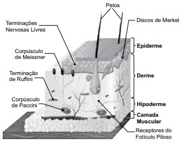

1. A Lei Federal no 12.037/2009, que dispõe sobre a identificação criminal do civilmente identificado e regulamenta em seu art. 5o -A, par. 1o, a coleta do perfil genético e armazenamento em banco de dados, afirma que
2. A Lei Federal no 9.454/1997, que institui o número único de Registro de Identidade Civil e dá outras providências, em seu art. 3o, par. 2o, define a responsabilidade dos Estados e do Distrito Federal
3. As técnicas de identificação criminal usadas hoje pelas forças policiais americanas estão enraizadas na ciência da antropometria, que se concentra na medição e registro meticulosos de diferentes partes e componentes do corpo humano. Geralmente, a aplicação da lei no final do séc. XIX e início do séc. XX acreditava que cada indivíduo possuía uma combinação única de medidas de diferentes partes do corpo, e a comparação dessas medidas poderia ser usada para distinguir os indivíduos.
(nleomf.org/museum/News/november-2011.Adaptado)
O criminologista que primeiro desenvolveu esse sistema antropométrico foi
4. Observe a figura.
Camada da Pele e Anexos
(https://planetabiologia.com/sistema-tegumentar-a-pele-humana/. Adaptado)
A disposição das cristas e sulcos papilares que compõem os desenhos papilares é formada em qual camada da pele?
5. Impressões digitais (cristas epidérmicas) têm sido usadas como um meio de identificação há mais de 2000 anos. Elas também foram extensivamente estudadas cientificamente por antropólogos e biólogos. No entanto, apesar de todo o conhecimento empírico e experimental, nenhuma explicação amplamente aceita para o desenvolvimento das cristas epidérmicas nos dedos, palmas das mãos e plantas dos pés ainda emergiu. [...].
(Kücken M, Newell AC. J Theor Biol. Fingerprintformation. 2005)
O momento em que se dá a completa formação das impressões digitais é
6. As impressões digitais das mãos humanas têm sido usadas como meio confiável de identificação pessoal há mais de um século. Durante esse tempo, não foram encontrados dois padrões de impressão digital idênticos.
(Swofford, Henry J. - Article The OntogenyoftheFrictionRidge: GeorgiaStateUniversity, DepartmentofBiology, JournalofForensicIdentification – 2008)
A afirmação refere-se a um dos postulados da papiloscopia.Trata-se de
7. O sistema datiloscópico [...] foi introduzido na medicina legal brasileira por volta de 1903, representando uma verdadeira mudança nos métodos de identificação, ante sua praticidade, simplicidade, eficiência e segurança nos resultados [...].
(https://fezanella.jusbrasil.com.br/. Adaptado)
O sistema mencionado no texto refere-se ao sistema criado por
8. Na fórmula E4343/I4242, o número 4 representa o tipo fundamental
9. Criminalística é a disciplina que tem por objetivo, com relação ao crime ou à identidade do criminoso,
10. O exame de corpo de delito e outras perícias serão realizados por perito oficial portador de
11. É correto afirmar que todo espaço físico onde ocorreu a prática de infração penal se trata de
12. Isolamento é, considerando-se um levantamento pericial eficaz, a
13. O Código de Processo Penal determina que, na presença de vestígios, é indispensável, sob pena de nulidade,